<title>Flier Studio Picks</title>
<meta name="claude:viewport-fit-sides" content="cover">
<link rel="preconnect" href="https://fonts.googleapis.com"><link rel="stylesheet" href="https://fonts.googleapis.com/css2?family=Oswald:wght@500;600&display=swap">
<style>
/* layout: one column of two question blocks; each option is a before row and an after row of real captures */
:root{--bg:#f5f4f2;--panel:#fbfaf8;--fg:#2f2925;--mute:#6f655c;--rule:#ddd6cd;--accent:#9a5a26;--paper:#fbfaf8;--ink-1:#2f2925;--ink-2:#6f655c;--ink-3:#9a8f84;--rule-1:rgba(47,41,37,.05);--rule-2:#ddd6cd;--display:"Oswald","Arial Narrow",system-ui,sans-serif}
@media (prefers-color-scheme:dark){:root:not([data-theme="light"]){--bg:#1c1a17;--panel:#25221e;--fg:#f4efe8;--mute:#a59a8c;--rule:#3a352f;--accent:#e9b47f;--paper:#25221e;--ink-1:#f4efe8;--ink-2:#a59a8c;--ink-3:#7d7366;--rule-1:rgba(255,255,255,.05);--rule-2:#3a352f;color-scheme:dark}}
:root[data-theme="dark"]{--bg:#1c1a17;--panel:#25221e;--fg:#f4efe8;--mute:#a59a8c;--rule:#3a352f;--accent:#e9b47f;--paper:#25221e;--ink-1:#f4efe8;--ink-2:#a59a8c;--ink-3:#7d7366;--rule-1:rgba(255,255,255,.05);--rule-2:#3a352f;color-scheme:dark}
body{background:var(--bg);color:var(--fg);font:15px/1.5 system-ui,-apple-system,"Segoe UI",sans-serif;padding-left:max(16px,env(safe-area-inset-left,0px));padding-right:max(16px,env(safe-area-inset-right,0px));padding-block:24px 64px}
main{max-width:1180px;margin:0 auto;display:grid;gap:28px}
h1{font-family:var(--display);font-weight:600;font-size:2rem;letter-spacing:.01em;margin:0;text-wrap:balance}
.sub{color:var(--mute);margin:4px 0 0}
.q{background:var(--panel);border:1px solid var(--rule);border-radius:10px;padding:18px;display:grid;gap:12px;min-width:0}
.qn{font-family:var(--display);font-size:1.3rem;margin:0}.qi{color:var(--accent);margin-right:8px}
.opts{list-style:none;margin:0;padding:0;display:grid;gap:14px}
.opts li{border-top:1px solid var(--rule);padding-block:14px 6px;min-width:0}
.lt{font-family:var(--display);font-size:1.1rem;color:var(--accent);margin-right:8px}
.opt{display:grid;gap:8px;min-width:0}.ot,.ol{margin:0}.ol{color:var(--mute);max-width:75ch}
.inv{font-size:.8rem;color:var(--mute);font-weight:400;margin-left:6px}
.chips{display:flex;flex-wrap:wrap;gap:6px}.chip{display:inline-flex;align-items:center;gap:6px;font:12px ui-monospace,Consolas,monospace;border:1px solid var(--rule);border-radius:99px;padding:2px 9px 2px 3px}
.chip i{width:14px;height:14px;border-radius:50%;border:1px solid var(--rule);display:inline-block}
.pair{display:grid;gap:10px}.tag{margin:0 0 4px;font-size:.75rem;letter-spacing:.08em;text-transform:uppercase;color:var(--mute)}.tag.after{color:var(--accent)}
.shots{display:flex;gap:10px;overflow-x:auto;padding-bottom:4px;align-items:flex-start}
figure{margin:0;flex:0 0 auto;display:grid;gap:3px}figure img{display:block;height:260px;width:auto;max-width:none;border:1px solid var(--rule);border-radius:6px}
figcaption{font:11px ui-monospace,Consolas,monospace;color:var(--mute)}
.why{color:var(--mute);font-size:.85rem;margin:0}
.score{font:12px ui-monospace,Consolas,monospace;border:1px solid var(--rule);border-radius:99px;padding:1px 8px;margin-left:6px;white-space:nowrap}
.wd{margin:0;padding:8px 12px;border:1px solid var(--fg);border-left-width:4px;border-radius:6px;font-weight:600}
.wd span{display:block;font-weight:400;color:var(--mute);font-size:.85rem}
.q .opts li.withdrawn{cursor:default;opacity:.55}
.q .opts li.withdrawn:hover{background:transparent}
.q .opts li.withdrawn::before{display:none}

  /* ---- answer-UI token defaults --------------------------------------
     Zero-specificity (:where) so ANY host declaration on :root / html
     (specificity 0,1,0) overrides every value below. Self-sufficient on a
     host palette that defines none of these. Light is declared on the bare
     selector first; the dark blocks only REDEFINE, so no colour has its
     sole definition inside a media query or [data-theme] rule. -------- */
  :where(html){
    --paper:#ffffff; --ink-1:#111111; --ink-2:#555555; --ink-3:#8a8a8a;
    --rule-1:rgba(0,0,0,.05); --rule-2:#e2e2de;
    --mono:ui-monospace,SFMono-Regular,"SF Mono",Menlo,Consolas,"Liberation Mono",monospace}
  @media (prefers-color-scheme:dark){
    :where(html:not([data-theme="light"])){
      --paper:#141414; --ink-1:#f0efec; --ink-2:#a8a49c; --ink-3:#6f6b64;
      --rule-1:rgba(255,255,255,.06); --rule-2:#333029}
  }
  :where(html[data-theme="dark"]){
    --paper:#141414; --ink-1:#f0efec; --ink-2:#a8a49c; --ink-3:#6f6b64;
    --rule-1:rgba(255,255,255,.06); --rule-2:#333029}
  :where(html[data-theme="light"]){
    --paper:#ffffff; --ink-1:#111111; --ink-2:#555555; --ink-3:#8a8a8a;
    --rule-1:rgba(0,0,0,.05); --rule-2:#e2e2de}

  /* ---- answerable questions ---- */
  .q{position:relative}
  .q.answered{border-color:var(--ink-3)}
  .q .opts li{cursor:pointer; padding-left:34px; position:relative;
    transition:background .12s ease}
  .q .opts li:hover{background:var(--rule-1, rgba(0,0,0,.03))}
  .q .opts li::before{content:''; position:absolute; left:6px; top:13px;
    width:13px; height:13px; border:1.5px solid var(--ink-3); border-radius:50%}
  .q .opts li[aria-checked="true"]::before{border-color:var(--ink-1, #111);
    background:var(--ink-1, #111); box-shadow:inset 0 0 0 3px var(--paper, #fff)}
  .q .opts li[aria-checked="true"]{background:var(--rule-1, rgba(0,0,0,.05))}
  .q .opts li:focus-visible{outline:2px solid var(--ink-2); outline-offset:-2px}
  .q .ansbox{margin:14px 0 0; padding-top:12px; border-top:1px solid var(--rule-2)}
  .q .ansbox .st{font-family:var(--mono); font-size:12px; color:var(--ink-3)}
  .q .ansbox .st b{color:var(--ink-1, #111)}
  .q .note-in{display:block; width:100%; box-sizing:border-box; margin-top:9px;
    font-family:inherit; font-size:14px; color:inherit; caret-color:currentColor;
    background:transparent; border:1px solid var(--rule-2); border-radius:0;
    padding:8px 10px; resize:vertical; min-height:2.4em}
  .q .note-in:focus{outline:none; border-color:var(--ink-3)}
  .qbar{border:1px solid var(--rule-2); padding:10px 14px; margin:20px 0;
    display:flex; flex-wrap:wrap; gap:10px; align-items:center;
    justify-content:space-between; position:sticky; top:0; z-index:5;
    background:var(--paper, #fff)}
  .qbar .prog{font-family:var(--mono); font-size:13px; color:var(--ink-2)}
  .qbar .prog b{color:var(--ink-1, #111); font-size:15px}
  .qbar .acts{display:flex; gap:9px; flex-wrap:wrap}
  .qbar button{font-family:inherit; font-size:13px; padding:7px 14px;
    border:1px solid var(--ink-3); background:transparent; color:var(--ink-1, #111);
    cursor:pointer; border-radius:0}
  .qbar button:hover{background:var(--rule-1, rgba(0,0,0,.05))}
  .qbar button.prim{background:var(--ink-1, #111); color:var(--paper, #fff);
    border-color:var(--ink-1, #111)}
  .qbar .mode{font-family:var(--mono); font-size:11.5px; color:var(--ink-3);
    flex-basis:100%}
  .expwrap{display:none; position:fixed; z-index:50; left:50%; top:50%;
    transform:translate(-50%,-50%); width:min(720px, calc(100vw - 32px));
    max-height:calc(100vh - 32px); box-sizing:border-box; overflow:auto;
    padding:16px; background:var(--paper, #fff); color:var(--ink-1, #111);
    border:1px solid var(--ink-3); box-shadow:0 12px 40px rgba(0,0,0,.35)}
  .expwrap.on{display:block}
  .expwrap .exphead{display:flex; justify-content:space-between; align-items:center;
    gap:10px; margin:0 0 10px; font-weight:600}
  .expwrap .exphead span{display:flex; gap:8px}
  .expwrap button{font-family:inherit; font-size:13px; padding:7px 14px; min-height:44px;
    border:1px solid var(--ink-3); background:transparent; color:var(--ink-1, #111);
    cursor:pointer; border-radius:0}
  .expwrap button.prim{background:var(--ink-1, #111); color:var(--paper, #fff);
    border-color:var(--ink-1, #111)}
  .expwrap textarea{width:100%; box-sizing:border-box; min-height:190px; height:50vh;
    font-family:var(--mono); font-size:12px; line-height:1.55; padding:12px;
    border:1px solid var(--rule-2); background:transparent; color:inherit}
  .expwrap .hint{font-size:13px; color:var(--ink-2); margin:8px 0 0}
</style>
<main>
<header><h1>Flier Studio: two app picks</h1><p class="sub">FLIER-1 "Flier Studio" · real captures of the live build, before and after, same route, fixture, viewport and scroll anchor.</p></header>
<div class="q" data-qid="q1"><p class="qn"><span class="qi">Q1</span>Which accent and palette should the app use? (becomes FLIER_TOKENS in @dloizides/design-tokens)</p>
<ul class="opts"><li data-letter="A"><span class="lt">A</span><span><div class="opt" data-option="P-A" data-inventory="45/45" data-aligned="pass" data-result="result.json">
<p class="ot"><b>P-A · Ink</b> <span class="inv">Inventory: 45/45 · form rows aligned · noloss none</span><span class="score">Critic 4.1 / 5 · PASS</span></p>
<p class="ol">Buttons, selected ring and slider in the flier ink; peach underlines section headings. Calm, the flier stays the brightest thing.</p><div class="chips"><span class="chip"><i style="background:#4a423c"></i>primary #4a423c</span><span class="chip"><i style="background:#ffffff"></i>onBrand #ffffff</span><span class="chip"><i style="background:#e9b47f"></i>mark #e9b47f</span><span class="chip"><i style="background:#f5f4f2"></i>background #f5f4f2</span><span class="chip"><i style="background:#fbfaf8"></i>surface #fbfaf8</span><span class="chip"><i style="background:#2f2925"></i>text #2f2925</span><span class="chip"><i style="background:#6f655c"></i>textSecondary #6f655c</span></div>
<div class="pair"><div class="side"><p class="tag">Before (live build)</p><div class="shots"><figure data-visual="before"><figcaption>1280 top</figcaption></figure><figure data-visual="before">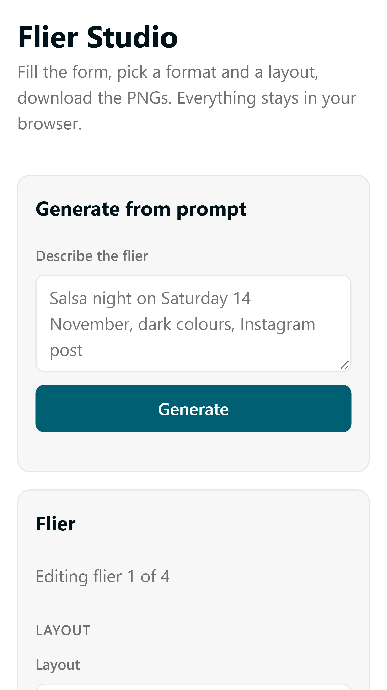<figcaption>360 top</figcaption></figure></div></div>
<div class="side"><p class="tag after">After</p><div class="shots"><figure data-visual="after">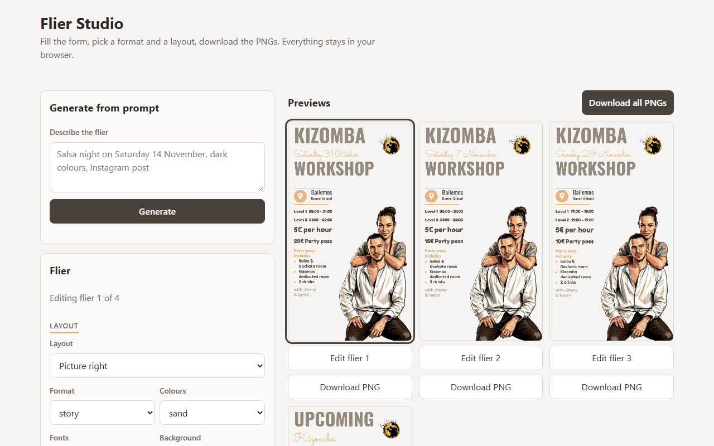<figcaption>1280 top</figcaption></figure><figure data-visual="after">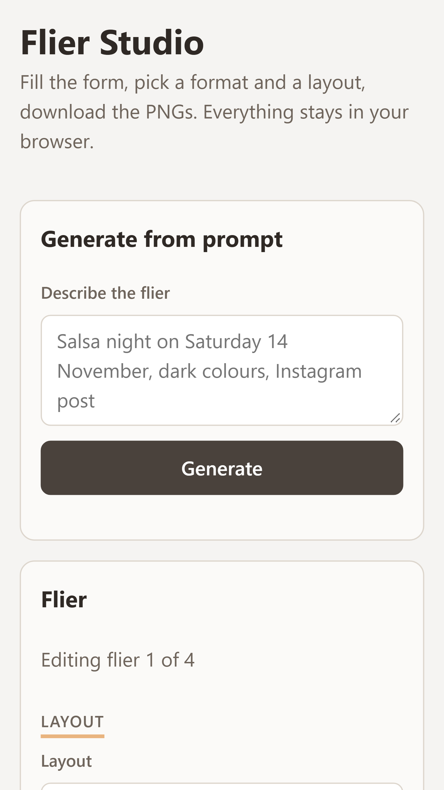<figcaption>360 top</figcaption></figure></div></div></div></div></span></li><li class="withdrawn" aria-disabled="true"><span class="lt">B</span><span><div class="opt" data-option="P-B" data-inventory="45/45" data-aligned="pass" data-result="result.json"><p class="wd">Withdrawn — did not pass review. Not pickable.<span>Peach buttons fuse with the flier's own peach marks; fill and ring read as two accents.</span></p>
<p class="ot"><b>P-B · Peach</b> <span class="inv">Inventory: 45/45 · form rows aligned · noloss none</span><span class="score">Critic 3.9 / 5 · REDO</span></p>
<p class="ol">Primary buttons take the flier accent with ink text; ring and slider in burnt amber so they keep 3:1.</p><div class="chips"><span class="chip"><i style="background:#e9b47f"></i>primary #e9b47f</span><span class="chip"><i style="background:#2f2925"></i>onBrand #2f2925</span><span class="chip"><i style="background:#9a5a26"></i>focusRing #9a5a26</span><span class="chip"><i style="background:#f5f4f2"></i>background #f5f4f2</span><span class="chip"><i style="background:#fbfaf8"></i>surface #fbfaf8</span><span class="chip"><i style="background:#2f2925"></i>text #2f2925</span><span class="chip"><i style="background:#6f655c"></i>textSecondary #6f655c</span></div>
<div class="pair"><div class="side"><p class="tag">Before (live build)</p><div class="shots"><figure data-visual="before"><figcaption>1280 top</figcaption></figure><figure data-visual="before"><figcaption>360 top</figcaption></figure></div></div>
<div class="side"><p class="tag after">After</p><div class="shots"><figure data-visual="after">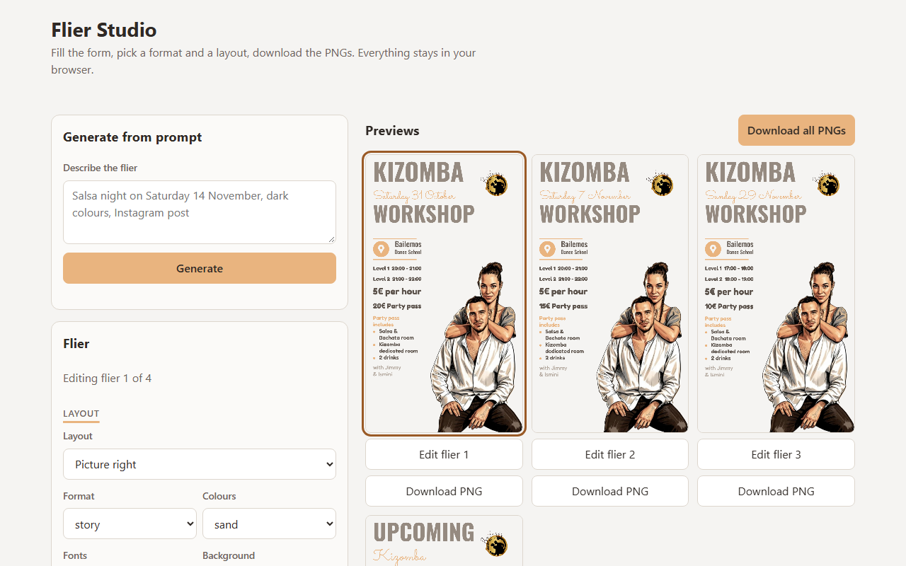<figcaption>1280 top</figcaption></figure><figure data-visual="after">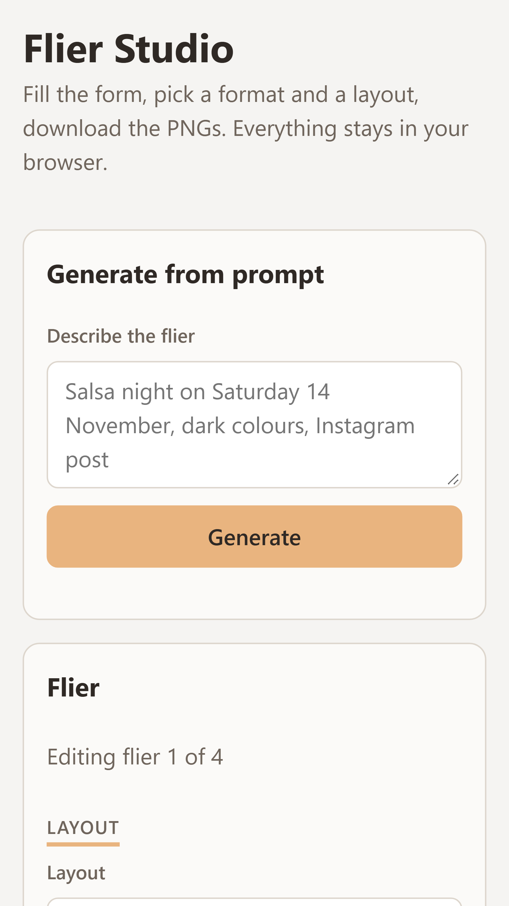<figcaption>360 top</figcaption></figure></div></div></div></div></span></li><li data-letter="C"><span class="lt">C</span><span><div class="opt" data-option="P-C" data-inventory="45/45" data-aligned="pass" data-result="result.json">
<p class="ot"><b>P-C · Burnt amber</b> <span class="inv">Inventory: 45/45 · form rows aligned · noloss none</span><span class="score">Critic 4.1 / 5 · PASS</span></p>
<p class="ol">The flier accent deepened to pass white text (5.4:1); amber underline (#d9a06a) marks headings.</p><div class="chips"><span class="chip"><i style="background:#9a5a26"></i>primary #9a5a26</span><span class="chip"><i style="background:#ffffff"></i>onBrand #ffffff</span><span class="chip"><i style="background:#d9a06a"></i>mark #d9a06a</span><span class="chip"><i style="background:#f5f4f2"></i>background #f5f4f2</span><span class="chip"><i style="background:#fbfaf8"></i>surface #fbfaf8</span><span class="chip"><i style="background:#2f2925"></i>text #2f2925</span><span class="chip"><i style="background:#6f655c"></i>textSecondary #6f655c</span></div>
<div class="pair"><div class="side"><p class="tag">Before (live build)</p><div class="shots"><figure data-visual="before"><figcaption>1280 top</figcaption></figure><figure data-visual="before"><figcaption>360 top</figcaption></figure></div></div>
<div class="side"><p class="tag after">After</p><div class="shots"><figure data-visual="after"><figcaption>1280 top</figcaption></figure><figure data-visual="after"><figcaption>360 top</figcaption></figure></div></div></div></div></span></li></ul><p class="why">Today: KATALOGOS_TOKENS teal #005f73, unrelated to the sand flier (critic r4, criterion 4 = 3).</p></div>
<div class="q" data-qid="q2"><p class="qn"><span class="qi">Q2</span>At 360 px the previews start about 2,500 px below the form. Which fix?</p>
<ul class="opts"><li data-letter="A"><span class="lt">A</span><span><div class="opt" data-option="L-A" data-inventory="45/45" data-aligned="pass" data-result="result.json">
<p class="ot"><b>L-A · Sticky mini-preview</b> <span class="inv">Inventory: 45/45 · form rows aligned · noloss none</span><span class="score">Critic 4.0 / 5 · PASS</span></p>
<p class="ol">A bar fixed to the bottom on phones: live thumbnail of the flier being edited plus "See all 4". Form order unchanged; desktop unchanged.</p>
<div class="pair"><div class="side"><p class="tag">Before (live build)</p><div class="shots"><figure data-visual="before"><figcaption>360 top</figcaption></figure><figure data-visual="before">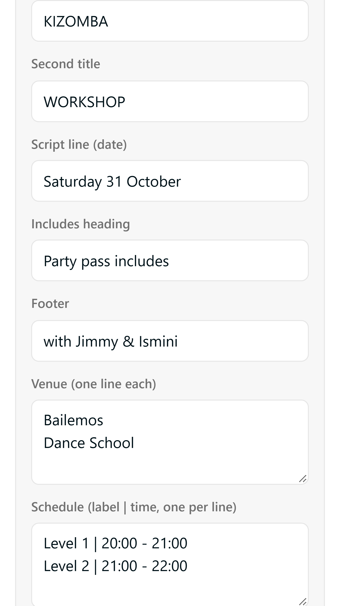<figcaption>360 text</figcaption></figure><figure data-visual="before">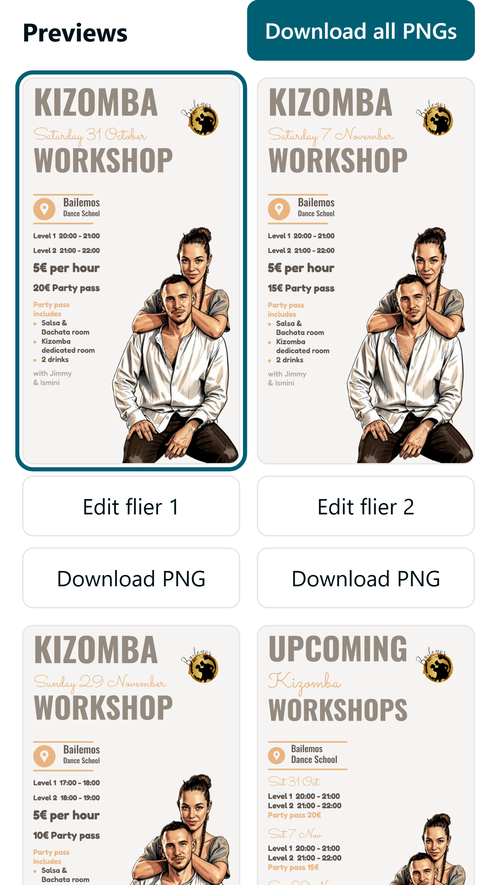<figcaption>360 previews</figcaption></figure><figure data-visual="before"><figcaption>1280 top</figcaption></figure></div></div>
<div class="side"><p class="tag after">After</p><div class="shots"><figure data-visual="after">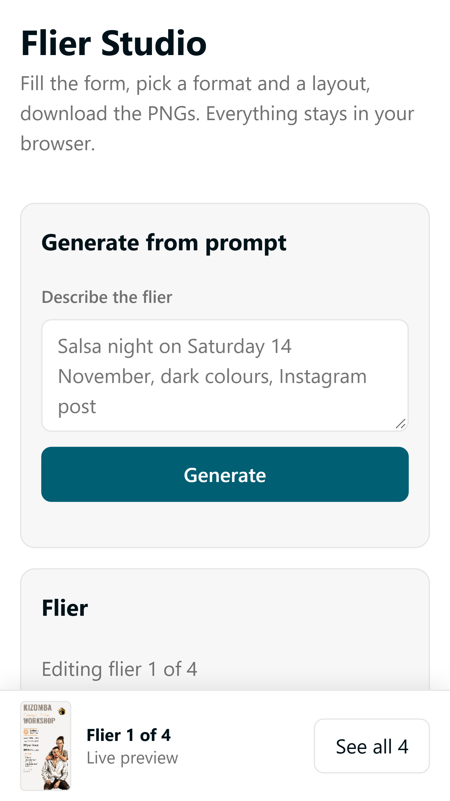<figcaption>360 top</figcaption></figure><figure data-visual="after">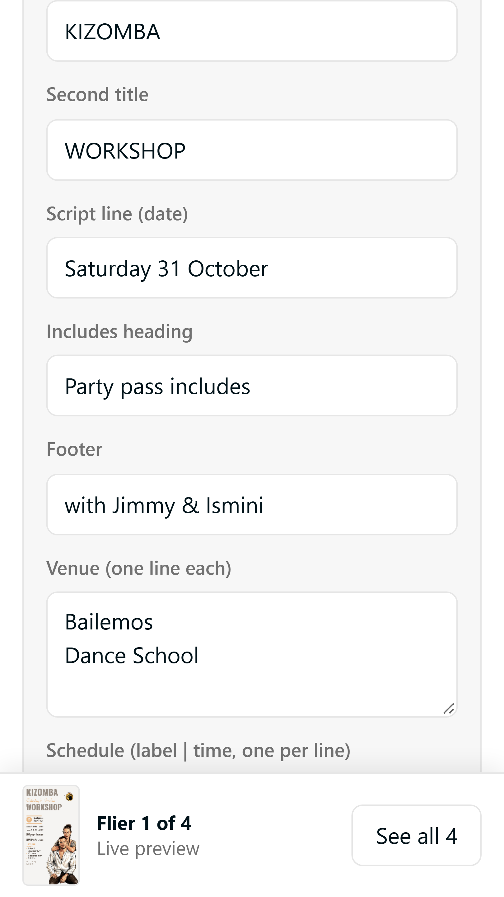<figcaption>360 text</figcaption></figure><figure data-visual="after">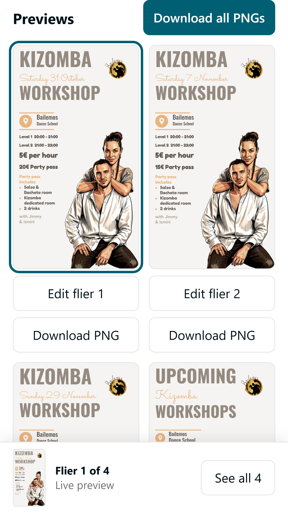<figcaption>360 previews</figcaption></figure><figure data-visual="after"><figcaption>1280 top</figcaption></figure></div></div></div></div></span></li><li data-letter="B"><span class="lt">B</span><span><div class="opt" data-option="L-B" data-inventory="45/45" data-aligned="pass" data-result="result.json">
<p class="ot"><b>L-B · Edit / Preview tabs</b> <span class="inv">Inventory: 45/45 · form rows aligned · noloss none</span><span class="score">Critic 4.0 / 5 · PASS</span></p>
<p class="ol">A sticky two-tab switch at the top of the page on phones; Preview shows the 4 cards with Edit and Download. Desktop unchanged.</p>
<div class="pair"><div class="side"><p class="tag">Before (live build)</p><div class="shots"><figure data-visual="before"><figcaption>360 top</figcaption></figure><figure data-visual="before"><figcaption>360 text</figcaption></figure><figure data-visual="before"><figcaption>360 previews</figcaption></figure><figure data-visual="before"><figcaption>1280 top</figcaption></figure></div></div>
<div class="side"><p class="tag after">After</p><div class="shots"><figure data-visual="after"><figcaption>360 top</figcaption></figure><figure data-visual="after"><figcaption>360 text</figcaption></figure><figure data-visual="after"><figcaption>360 previews</figcaption></figure><figure data-visual="after"><figcaption>1280 top</figcaption></figure></div></div></div></div></span></li><li class="withdrawn" aria-disabled="true"><span class="lt">C</span><span><div class="opt" data-option="L-C" data-inventory="45/45" data-aligned="pass" data-result="result.json"><p class="wd">Withdrawn — did not pass review. Not pickable.<span>Selected flier ring is clipped by the strip; past the first screen no preview is visible while editing.</span></p>
<p class="ot"><b>L-C · Previews first</b> <span class="inv">Inventory: 45/45 · form rows aligned · noloss none</span><span class="score">Critic 3.5 / 5 · REDO</span></p>
<p class="ol">On phones the previews move above the form as a swipe strip (2.2 cards visible). Desktop unchanged.</p>
<div class="pair"><div class="side"><p class="tag">Before (live build)</p><div class="shots"><figure data-visual="before"><figcaption>360 top</figcaption></figure><figure data-visual="before"><figcaption>360 text</figcaption></figure><figure data-visual="before"><figcaption>360 previews</figcaption></figure><figure data-visual="before"><figcaption>1280 top</figcaption></figure></div></div>
<div class="side"><p class="tag after">After</p><div class="shots"><figure data-visual="after">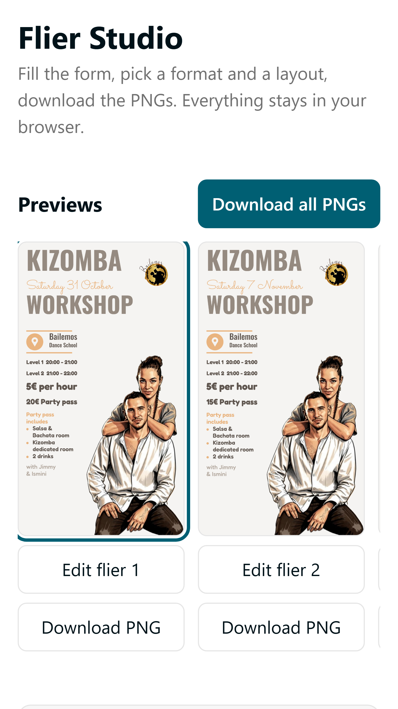<figcaption>360 top</figcaption></figure><figure data-visual="after">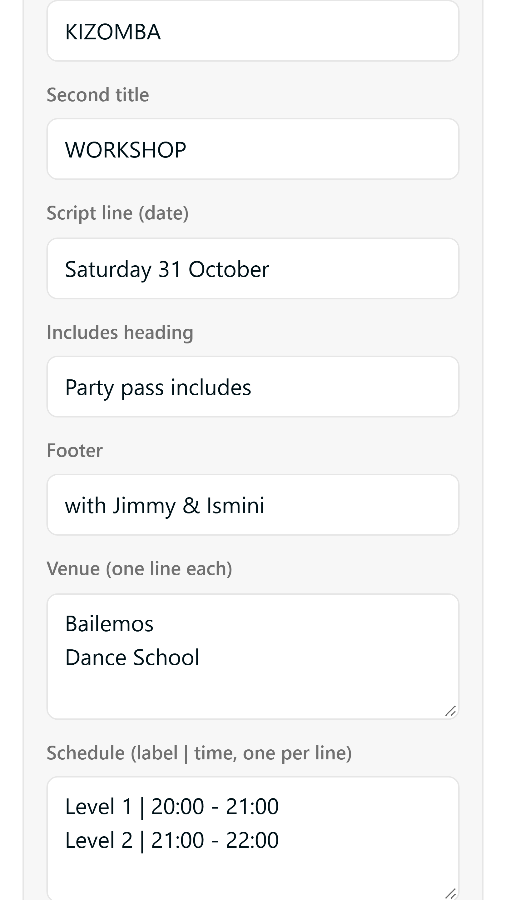<figcaption>360 text</figcaption></figure><figure data-visual="after">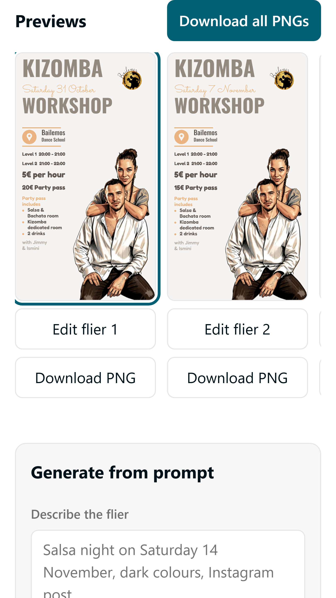<figcaption>360 previews</figcaption></figure><figure data-visual="after">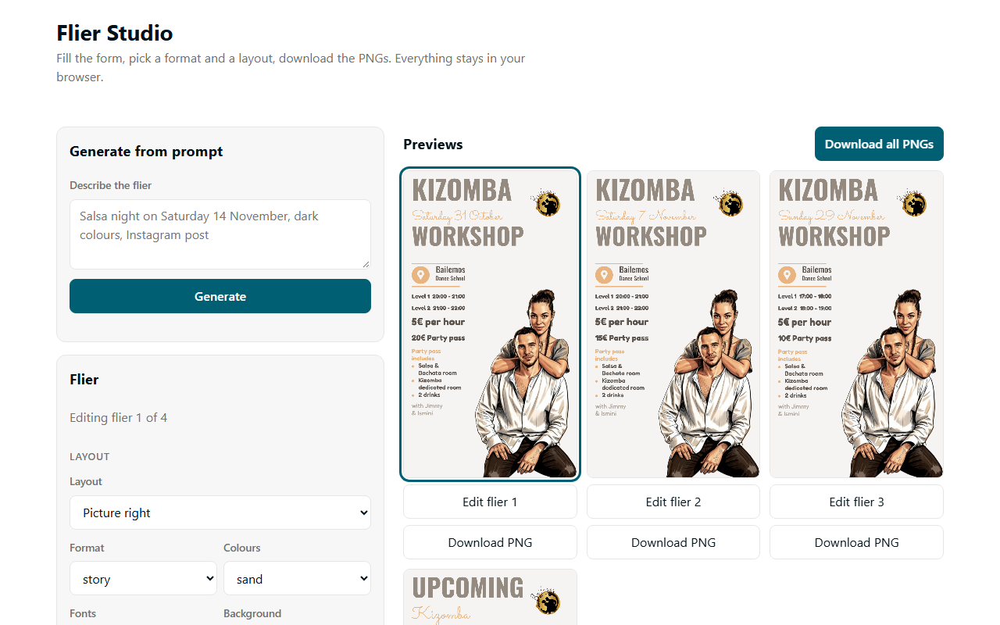<figcaption>1280 top</figcaption></figure></div></div></div></div></span></li></ul><p class="why">Captures of Q2 keep today's teal so only the layout differs.</p></div>
</main>

<script>
(function () {
  'use strict';
  // Contrast guard: a host page forced dark (or light) while the OS scheme differs left
  // --ink-1 #111 on a dark background, so typed notes were invisible (2026-10-01).
  (function () {
    function lum(c) {
      var m = (c || '').match(/[\d.]+/g); if (!m || m.length < 3) return null;
      var v = m.slice(0, 3).map(function (x) { x = x / 255;
        return x <= 0.03928 ? x / 12.92 : Math.pow((x + 0.055) / 1.055, 2.4); });
      return 0.2126 * v[0] + 0.7152 * v[1] + 0.0722 * v[2];
    }
    var el = document.body, bg = null;
    while (el && el.nodeType === 1) {
      var c = getComputedStyle(el).backgroundColor;
      if (c && !/rgba\([^)]*,\s*0\)|transparent/.test(c)) { bg = c; break; }
      el = el.parentElement;
    }
    var root = document.documentElement;
    var probe = document.createElement('span');
    probe.style.color = 'var(--ink-1, #111)'; document.body.appendChild(probe);
    var lb = lum(bg || 'rgb(255,255,255)'), li = lum(getComputedStyle(probe).color);
    probe.remove();
    if (lb === null || li === null) return;
    if ((Math.max(lb, li) + 0.05) / (Math.min(lb, li) + 0.05) >= 4.5) return;
    var dark = lb < 0.2, set = dark
      ? ['#141414', '#f0efec', '#a8a49c', '#6f6b64', 'rgba(255,255,255,.06)', '#333029']
      : ['#ffffff', '#111111', '#555555', '#8a8a8a', 'rgba(0,0,0,.05)', '#e2e2de'];
    ['--paper', '--ink-1', '--ink-2', '--ink-3', '--rule-1', '--rule-2'].forEach(
      function (k, i) { root.style.setProperty(k, set[i]); });
  })();
  var DOCKEY = 'flier1-app-picks';
  var DOCTITLE = 'Flier Studio app picks';
  var LS = 'answers:' + DOCKEY;
  var state = {};
  var db = null;

  function load() {
    try {
      var raw = window.localStorage.getItem(LS);
      if (raw) state = JSON.parse(raw) || {};
    } catch (e) { state = {}; }
  }

  function persistLocal() {
    try { window.localStorage.setItem(LS, JSON.stringify(state)); } catch (e) {}
  }

  function persistDb(qid) {
    if (!db) return;
    var v = state[qid] || {};
    db.doc('answers/' + qid).set({
      question: v.question || '',
      choice: v.choice || '',
      choiceText: v.choiceText || '',
      note: v.note || '',
      doc: DOCKEY,
      updatedAt: new Date().toISOString()
    }).catch(function () { /* keep the local copy; export still works */ });
  }

  function save(qid) { persistLocal(); persistDb(qid); }

  var blocks = [];

  function render() {
    var done = 0;
    blocks.forEach(function (b) {
      var v = state[b.qid] || {};
      b.el.classList.toggle('answered', !!v.choice);
      if (v.choice) done++;
      b.opts.forEach(function (li) {
        var on = li.getAttribute('data-letter') === v.choice;
        li.setAttribute('aria-checked', on ? 'true' : 'false');
        li.setAttribute('tabindex', on || (!v.choice && li === b.opts[0]) ? '0' : '-1');
      });
      b.status.textContent = v.choice ? 'answered — ' : 'not answered yet';
      if (v.choice) {
        var bb = document.createElement('b');
        bb.textContent = v.choice;
        b.status.appendChild(bb);
      }
      if (b.note.value !== (v.note || '')) b.note.value = v.note || '';
    });
    if (bar) {
      bar.prog.innerHTML = '<b>' + done + '</b> of ' + blocks.length + ' answered';
    }
  }

  function choose(b, letter, text) {
    var v = state[b.qid] || {};
    if (v.choice === letter) { delete v.choice; delete v.choiceText; }
    else { v.choice = letter; v.choiceText = text; }
    v.question = b.question;
    state[b.qid] = v;
    save(b.qid);
    render();
  }

  function buildExport() {
    var out = ['# Answers \u2014 ' + DOCTITLE,
               'recorded ' + new Date().toISOString().slice(0, 16).replace('T', ' ') + ' UTC',
               ''];
    blocks.forEach(function (b) {
      var v = state[b.qid] || {};
      out.push('## ' + b.qid.toUpperCase() + ' \u2014 ' + b.question);
      out.push(v.choice
        ? '**Answer: ' + v.choice + '** \u2014 ' + (v.choiceText || '')
        : '**Answer: (not answered)**');
      if (v.note) out.push('Note: ' + v.note);
      out.push('');
    });
    return out.join('\n');
  }

  var bar = null;

  function buildBar(firstQ) {
    var el = document.createElement('div');
    el.className = 'qbar';
    el.innerHTML =
      '<span class="prog"></span>' +
      '<span class="acts">' +
      '<button type="button" class="clr">Clear all</button>' +
      '<button type="button" class="prim exp">Export answers</button>' +
      '</span>' +
      '<span class="mode"></span>';
    var wrap = document.createElement('div');
    wrap.className = 'expwrap';
    wrap.setAttribute('role', 'dialog');
    wrap.setAttribute('aria-label', 'Exported answers');
    wrap.innerHTML = '<div class="exphead">Your answers' +
      '<span><button type="button" class="prim cpy">Copy</button>' +
      '<button type="button" class="cls">Close</button></span></div>' +
      '<textarea readonly aria-label="Answers for export"></textarea>' +
      '<p class="hint">Press Copy, then paste the text into the conversation.</p>';
    var section = firstQ.closest ? firstQ.closest('section') : null;
    var anchor = section && section.parentNode ? section : firstQ;
    anchor.parentNode.insertBefore(el, anchor);
    document.body.appendChild(wrap);

    bar = {
      el: el,
      prog: el.querySelector('.prog'),
      mode: el.querySelector('.mode'),
      exportBtn: el.querySelector('.exp'),
      wrap: wrap,
      ta: wrap.querySelector('textarea'),
      hint: wrap.querySelector('.hint')
    };

    function closeExport() { wrap.classList.remove('on'); bar.exportBtn.focus(); }
    wrap.querySelector('.cls').addEventListener('click', closeExport);
    document.addEventListener('keydown', function (e) {
      if (e.key === 'Escape' && wrap.classList.contains('on')) closeExport();
    });
    wrap.querySelector('.cpy').addEventListener('click', function () {
      bar.ta.focus();
      bar.ta.select();
      var ok = false;
      try { ok = document.execCommand('copy'); } catch (e) {}
      try {
        if (navigator.clipboard && navigator.clipboard.writeText)
          navigator.clipboard.writeText(bar.ta.value).then(function () {
            bar.hint.textContent = 'Copied. Paste it into the conversation.';
          }, function () {});
      } catch (e) {}
      bar.hint.textContent = ok ? 'Copied. Paste it into the conversation.'
        : 'The text is selected: press Ctrl+C (Cmd+C on a Mac), then paste it into the conversation.';
    });

    el.querySelector('.clr').addEventListener('click', function () {
      blocks.forEach(function (b) {
        state[b.qid] = { question: b.question, note: (state[b.qid] || {}).note || '' };
        delete state[b.qid].choice;
        save(b.qid);
      });
      render();
    });

    bar.exportBtn.addEventListener('click', function () {
      var txt = buildExport();
      bar.ta.value = txt;
      bar.wrap.classList.add('on');
      bar.hint.textContent = 'Press Copy, then paste the text into the conversation.';
      bar.ta.focus();
      bar.ta.select();
    });
  }

  function init() {
    var qs = Array.prototype.slice.call(document.querySelectorAll('.q[data-qid]'));
    if (!qs.length) return;

    qs.forEach(function (el) {
      var qid = el.getAttribute('data-qid');
      var qn = el.querySelector('.qn');
      var question = qn ? qn.textContent.replace(/\s+/g, ' ').replace(/^\s*Q\d+\s*/, '').trim() : qid;
      var opts = Array.prototype.slice.call(el.querySelectorAll('.opts li[data-letter]'));
      var group = el.querySelector('.opts');
      if (group) group.setAttribute('role', 'radiogroup');

      var box = document.createElement('div');
      box.className = 'ansbox';
      box.innerHTML = '<span class="st"></span>' +
        '<textarea class="note-in" rows="2" placeholder="Optional \u2014 a caveat, a ' +
        'condition, or why not the recommendation."></textarea>';
      var oldAns = el.querySelector('.ans');
      if (oldAns) oldAns.parentNode.replaceChild(box, oldAns);
      else el.appendChild(box);

      var b = {
        el: el, qid: qid, question: question, opts: opts,
        status: box.querySelector('.st'), note: box.querySelector('.note-in')
      };

      opts.forEach(function (li) {
        li.setAttribute('role', 'radio');
        li.setAttribute('aria-checked', 'false');
        var span = li.querySelector('span:last-child');
        var text = (span ? span.textContent : li.textContent)
          .replace(/\s+/g, ' ').replace(/\s*recommended\s*$/i, '').trim();
        li.addEventListener('click', function () {
          choose(b, li.getAttribute('data-letter'), text);
        });
        li.addEventListener('keydown', function (ev) {
          if (ev.key === ' ' || ev.key === 'Enter') {
            ev.preventDefault();
            choose(b, li.getAttribute('data-letter'), text);
          }
        });
      });

      b.note.addEventListener('input', function () {
        var v = state[qid] || {};
        v.note = b.note.value;
        v.question = question;
        state[qid] = v;
        persistLocal();
      });
      b.note.addEventListener('blur', function () { persistDb(qid); });

      blocks.push(b);
    });

    load();
    buildBar(qs[0]);
    render();

    if (window.claude && typeof window.claude.use === 'function') {
      window.claude.use('db').then(function (d) {
        if (!d) { setMode('saved in this browser only'); return; }
        db = d;
        setMode('saved to this page \u2014 Claude can read these answers back');
        d.collection('answers').get().then(function (snap) {
          var touched = false;
          snap.docs.forEach(function (doc) {
            var data = doc.data() || {};
            var cur = state[doc.id] || {};
            if (!cur.choice && !cur.note && (data.choice || data.note)) {
              state[doc.id] = {
                question: data.question || cur.question || '',
                choice: data.choice || '', choiceText: data.choiceText || '',
                note: data.note || ''
              };
              touched = true;
            }
          });
          if (touched) { persistLocal(); render(); }
        }).catch(function () {});
      }).catch(function () { setMode('saved in this browser only'); });
    } else {
      setMode('saved in this browser only');
    }
  }

  function setMode(t) { if (bar) bar.mode.textContent = t; }

  if (document.readyState === 'loading')
    document.addEventListener('DOMContentLoaded', init);
  else init();
})();
</script>
